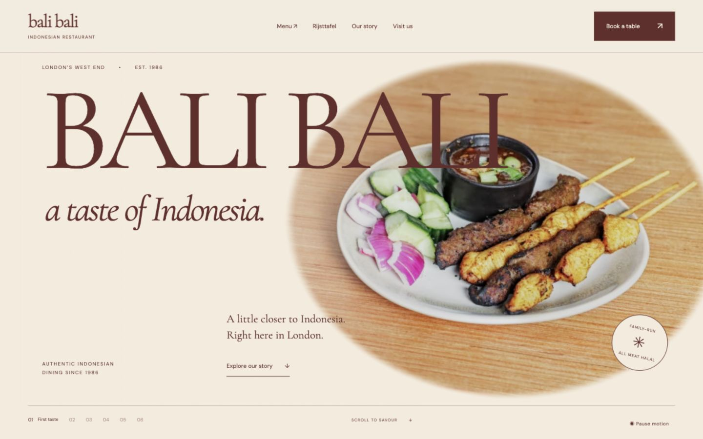

New · Concept D · Cinematic prototype
A Journey to the Indonesian Table
Six connected scenes. A camera moves between dishes, through a ceramic portal and up above the shared table. Built with Next.js and React Three Fiber, with a motion-free photographic edition.